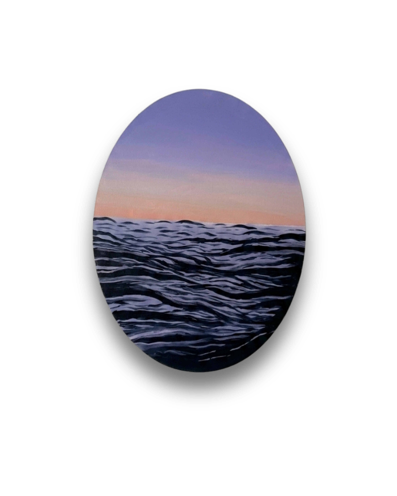

01
Where the Sea Keeps My Secrets
حيث يحتفظ البحر بأسراري
Acrylic on canvas — ألوان أكريليك على قماش
The sea has always carried a language of its own, one that does not need words to be understood.
In this piece, I wanted to capture the sea at the quietest moment between day and night. The soft tones of the fading sky meet the deeper blues of the water, creating a contrast between light and depth. The waves are layered and expressive, moving across the canvas like thoughts that never truly come to rest.
For me, the sea is more than a landscape. It is a place of reflection, escape, and emotional stillness. Every wave suggests movement, yet the overall scene remains peaceful. I wanted the viewer to feel as though they are standing before the water, taking a moment away from everything else.
This painting is a reflection of a feeling I often find in the sea: the ability to be surrounded by movement while still finding peace within yourself.